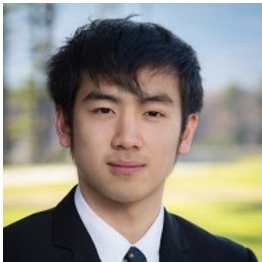
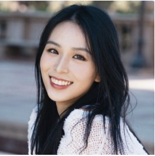
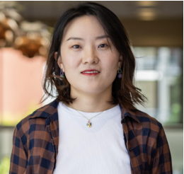
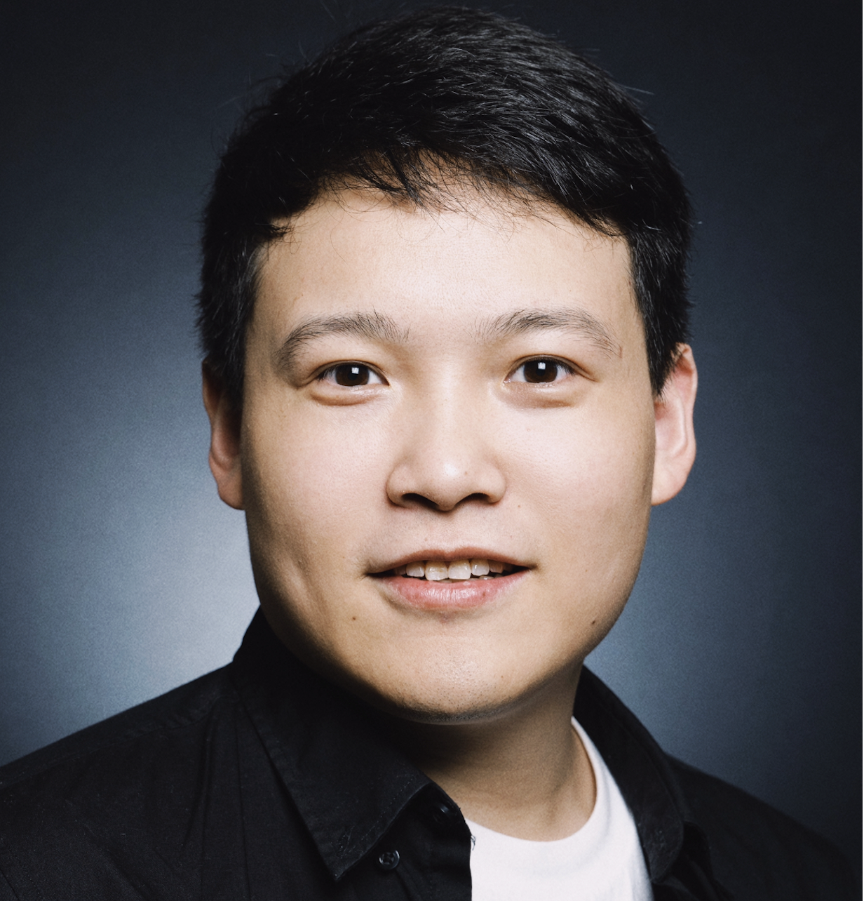

ACL 2026
ACL 2026
Knowledge Control for
Responsible Generative AI
Post-training methods to selectively remove, update, and steer the behavior of LLMs, multimodal LLMs, and text-to-image models — improving safety, privacy, and fairness without full retraining.
About this Tutorial
Goal & scopeControlling the knowledge and behavior of generative AI systems — LLMs, multimodal LLMs (MLLMs), and text-to-image (T2I) models — is critical as they reach safety-sensitive, socially impactful applications. These models often encode unintended, biased, or private content, causing harmful outputs. Post-training knowledge control selectively modifies or removes model behaviors without full retraining — a scalable, interpretable path to safety, privacy, and fairness.
This tutorial covers the foundations and frontier methods of post-training knowledge control, bridging academia and industry: (i) motivations and failure modes; (ii) core methods — machine unlearning, knowledge editing, and inference-time interventions; and (iii) evaluation protocols balancing forgetting, retention, and fairness, with case studies across text and vision–language generation.
Program
Half-day · 7 parts + industry panel- What “knowledge control” means in generative models
- Motivations & taxonomy of post-training interventions
- Failure modes: harmful generation, bias, privacy leakage
- Selective forgetting & behavior suppression strategies
- Balancing stability, retention, and scalability
- Practical implications for real-world deployment
- Mechanistic & memory-based editing methods
- Factual correction, personalization, reasoning consistency
- Extensions to multilingual & multimodal systems
- Deployment constraints & safety/utility trade-offs at scale
- Auditability, governance, and operational best practices
- Industry case studies & live panel discussion
- Bias-aware decoding & fairness-preserving interventions
- Reflection-based & self-alignment strategies
- Distillation & feedback-loop based modification
- Forgetting–retention & fairness–utility metrics
- Benchmarks for safety, privacy, and factual reliability
- Responsible deployment, auditing, and governance
- Scalable & certifiable unlearning for foundation models
- Open challenges & cross-sector collaboration roadmap
Speakers
Academic presenters


Industry Panel
Perspectives from industry & labs